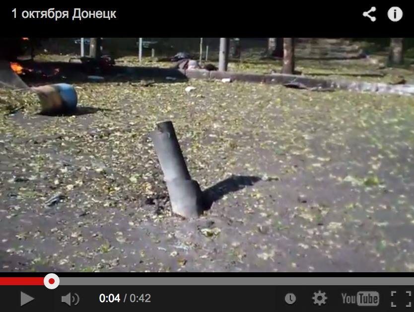
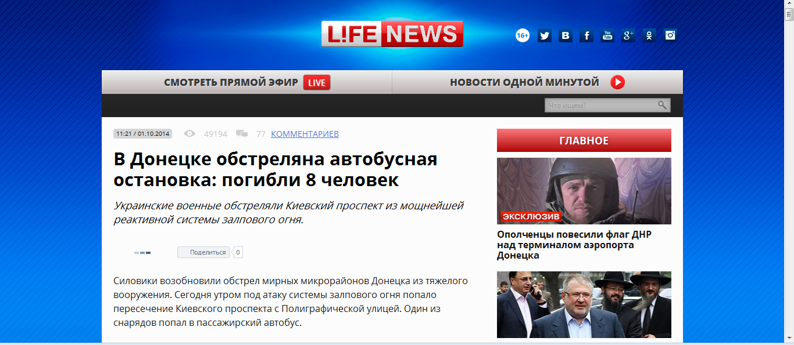
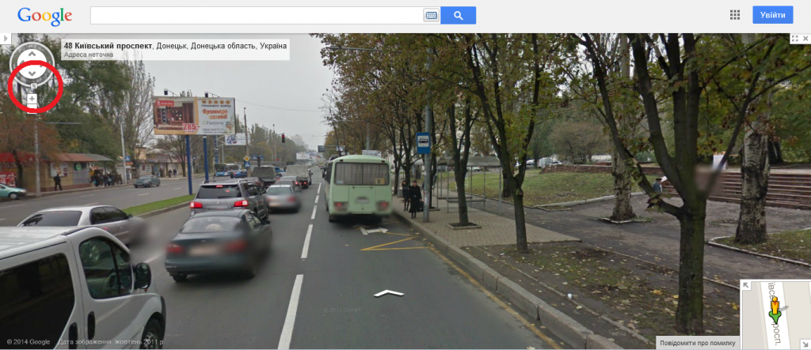
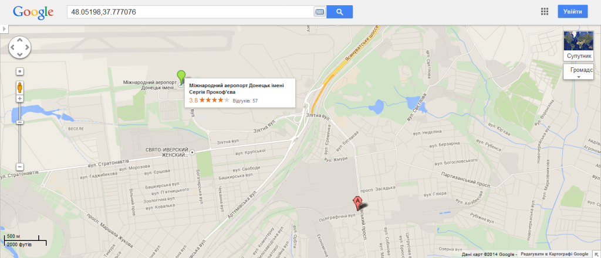
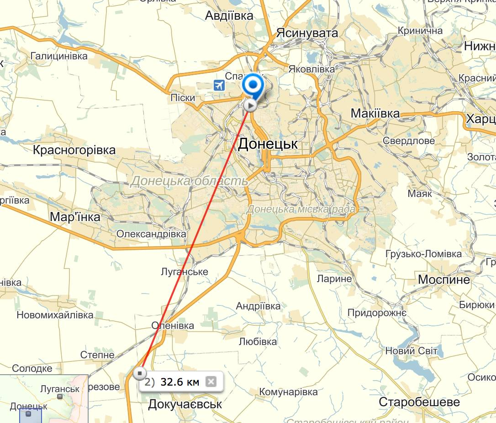
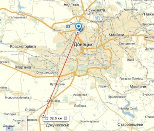
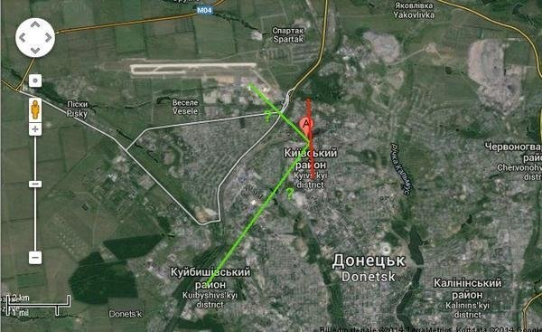
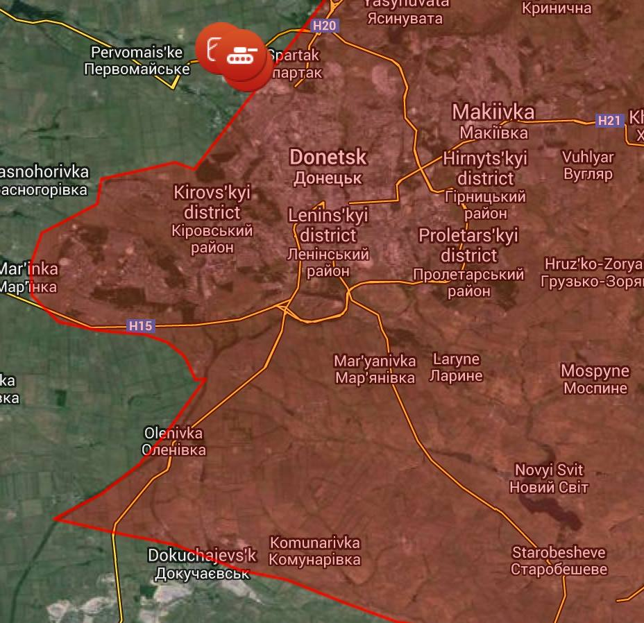

Фейк: Автобусную остановку в Донецке обстреляли украинские военные
1 октября сайт Lifenews сообщил о гибели восьми человек вследствие обстрела автобусной остановки в городе Донецке.В статье идет речь об остановке на пересечении Киевского проспекта и улицы Полиграфической, которую «украинские военные обстреляли из мощнейшей реактивной системы залпового огня».Один из снарядов попал в автобус, в результате чего тот выгорел дотла.Журналисты Lifenews обвиняют украинских военных в обстреле остановки, автобуса и соответственно смерти восьми мирных жителей.Они указывают на то, что выстрелы проводились якобы с территории аэропорта, который находится под контролем Вооруженных сил Украины (ВСУ).
По скриншоту из видео с места происшествия можна определить многие нестыковки в словах журналистов Lifenews.Они утверждают, что обстрел производили украинские военные со стороны аэропорта.Вот скриншот видео, на котором явно видно, откуда прилетел один из снарядов.На видео можна также увидеть локацию самой остановки и расположение остальных объектов – это важно, так как пригодится для следующих заключений.
С помощью приложения Google Earth/ Street view возможно доказать, что снаряд прилетел с южной стороны, а не из аэропорта, который находится северней.Обратите внимание на скриншот с Google Earth/ Street view и сопоставьте его с расположением упавшего снаряда с видео.Визуально можна определить, что ракета прилетела из местности, которая находится на 45 градусов юго-западне от Киевского проспекта.Важно отметить расположение пометки N – North слева на панели управления – она ясно указывает, что север, где и расположен Международный аэропорт Донецк, находится сзади от нас, то есть в противоположной стороне от направления, откуда прилетел снаряд.
Проведенная по карте линия указывает приблизительный градус полета данного снаряда.
Следует также учесть расстояние поражения залпового огня – до 30 км, а также то, что южнее на этом расстоянии находятся лишь подконтрольные боевикам территории.Вот карта линии фронта:
Posted On: 2014-10-04T21:00:00








Content Date: 2014-10-04
Download Date: 2021-07-16
Document ID: L0C04FGYI